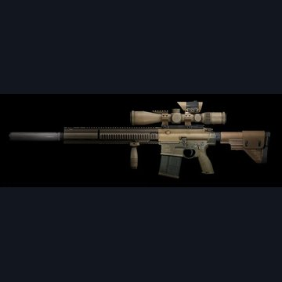
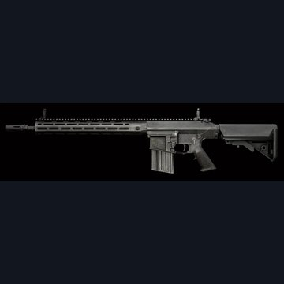
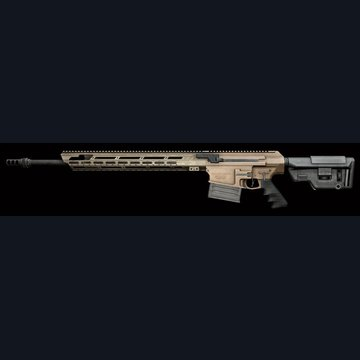
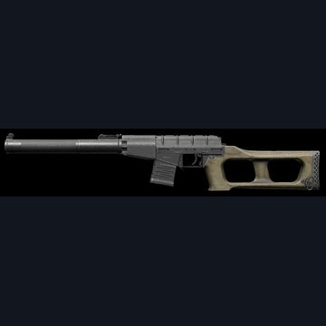
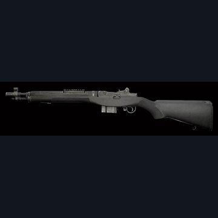

Repères de la famille
Onze fusils de précision semi-automatiques : la famille qui reconcile les deux gestes qu’on oppose d’ordinaire, la visée longue et la rafale courte. Dix de ces armes ne tirent qu’en semi-automatique, une seule accepte l’automatique, et les cadences publiées vont de 25 à 900 coups par minute. Les six calibres sont lourds : 7,62 x 51 mm NATO pour six armes, puis 9,3 x 64 mm, 12,7 x 99 mm, 7,62 x 54 mm R, 8,6 x 70 mm et 9 x 39 mm.
28 à 80
Ergonomie. La Kel-Tec RFB en 7,62 x 51 mm atteint 80, l’AK-50 en .50 BMG 66, le Remington R11 RSASS 50. L’écart entre le bas et le haut de la famille est plus large que sur les fusiliers de précision.
80 à 624
Recul vertical. La VSS Vintorez est la plus docile à 80 ; l’AK-50 en .50 BMG monte à 624. En semi-automatique, ce chiffre décide de la qualité du second tir.
400 à 1 000
Distance efficace. L’AK-50 atteint mille mètres, la Kel-Tec RFB et la TKPD en 9,3 x 64 mm neuf cents, et le bas de la famille reste à quatre cents mètres.
Le DMR est souvent un fusil à deux usages. Sa cadence semi-automatique permet de rester dans le combat sans perdre la visée longue. C’est ce qui explique le nombre de cartouches compatibles relevé dans le tableau : ces armes se nourrissent de cartouches lourdes, moins nombreuses en magasin et plus chères à l’unité.
Le catalogue de la famille
Les onze fusils de précision semi-automatiques de l’export, avec leurs mesures à configuration de base.
| Image | Arme | Calibre | Ergonomie | Recul vertical | Recul horizontal | Cadence (c/min) | Distance efficace (m) | Modes de tir | Munitions | Presets |
|---|---|---|---|---|---|---|---|---|---|---|
 | Carabine d'assaut Kel-Tec RFB 7,62 x 51 mm | 7,62 x 51 mm NATO | 80 | 148 | 307 | 700 | 900 | Semi-automatique | 8 | 2 |
 | Carabine d'assaut TKPD 9,3 x 64 mm | 9,3 x 64 mm | 40 | 493 | 1150 | 25 | 900 | Semi-automatique | 3 | 5 |
 | Fusil de précision anti-matériel TheAKGuy AK-50 .50 BMG | 12,7 x 99 mm | 66 | 624 | 1163 | 30 | 1000 | Semi-automatique | 4 | 1 |
 | Fusil de précision semi-automatique HK G28 7,62 x 51 mm | 7,62 x 51 mm NATO | 48 | 146 | 400 | 700 | 900 | Semi-automatique | 8 | 2 |
 | Fusil de précision semi-automatique Knight's Armament Company SR-25 7,62 x 51 mm | 7,62 x 51 mm NATO | 47 | 155 | 356 | 700 | 900 | Semi-automatique | 8 | 4 |
 | Fusil de précision semi-automatique Knight's Armament Company SR-25 7,62 x 51 mm (Taupe) | 7,62 x 51 mm NATO | 47 | 155 | 356 | 700 | 900 | Semi-automatique | 8 | 1 |
 | Fusil de précision semi-automatique Remington R11 RSASS 7,62 x 51 mm | 7,62 x 51 mm NATO | 50 | 145 | 324 | 700 | 900 | Semi-automatique | 8 | 3 |
 | Fusil de précision semi-automatique SVDS 7,62 x 54 mm R | 7,62 x 54 mm R | 47 | 220 | 647 | 700 | 900 | Semi-automatique | 9 | 3 |
 | Fusil de précision semi-automatique SWORD International Mk-18 .338 Lapua Magnum | 8,6 x 70 mm | 34 | 577 | 1241 | 30 | 900 | Semi-automatique | 4 | 4 |
 | Fusil de précision spécial VSS Vintorez 9 x 39 mm | 9 x 39 mm | 43 | 80 | 270 | 900 | 400 | Semi-automatique, Automatique | 6 | 3 |
 | Springfield Armory M1A 7,62 x 51 mm | 7,62 x 51 mm NATO | 28 | 214 | 405 | 700 | 700 | Semi-automatique | 8 | 5 |
Une seule de ces armes est vendue en magasin : le Springfield Armory M1A. Les dix autres n’ont aucune offre marchande dans l’export ; l’export ne portant pas de donnée de tâche au niveau de l’arme, leur mode d’acquisition réel — raid, tâche ou marché — se vérifie dans le client.
Presets publiés
Trente-trois presets sont rattachés aux onze armes de cette famille. Le preset type d’un DMR combine une optique, une crosse qui allonge la longueur du canon et un frein de bouche ou un cache-flamme : l’ergonomie progresse, le poids aussi.
| Preset | Ergonomie | Recul vertical | Recul horizontal | Précision (MOA) | État |
|---|---|---|---|---|---|
| Carabine d'assaut Kel-Tec RFB 7,62 x 51 mm HHS-1Carabine d'assaut Kel-Tec RFB 7,62 x 51 mm | 73.7 | 119 | 247 | 1.48 | preset publié |
| Carabine d'assaut TKPD 9,3 x 64 mm AssaultCarabine d'assaut TKPD 9,3 x 64 mm | 51.5 | 434 | 1012 | 1.93 | preset publié |
| Carabine d'assaut TKPD 9,3 x 64 mm PM II 1-8 x 24Carabine d'assaut TKPD 9,3 x 64 mm | 43.5 | 259 | 604 | 1.51 | preset publié |
| Carabine d'assaut TKPD 9,3 x 64 mm SniperCarabine d'assaut TKPD 9,3 x 64 mm | 38.5 | 414 | 966 | 1.51 | preset publié |
| Carabine d'assaut TKPD 9,3 x 64 mm XPS3-2Carabine d'assaut TKPD 9,3 x 64 mm | 52 | 266 | 621 | 1.93 | preset publié |
| Fusil de précision semi-automatique HK G28 7,62 x 51 mm PatrolFusil de précision semi-automatique HK G28 7,62 x 51 mm | 47.5 | 84 | 230 | 1.13 | preset publié |
| Fusil de précision semi-automatique Knight's Armament Company SR-25 7,62 x 51 mm Ba-choFusil de précision semi-automatique Knight's Armament Company SR-25 7,62 x 51 mm | 36.5 | 81 | 186 | 1.55 | preset publié |
| Fusil de précision semi-automatique Knight's Armament Company SR-25 7,62 x 51 mm PM II 1-8 x 24Fusil de précision semi-automatique Knight's Armament Company SR-25 7,62 x 51 mm | 50 | 88 | 202 | 1.55 | preset publié |
| Fusil de précision semi-automatique Knight's Armament Company SR-25 7,62 x 51 mm TAC30Fusil de précision semi-automatique Knight's Armament Company SR-25 7,62 x 51 mm | 41.3 | 83 | 190 | 1.55 | preset publié |
| Fusil de précision semi-automatique Remington R11 RSASS 7,62 x 51 mm KiowaFusil de précision semi-automatique Remington R11 RSASS 7,62 x 51 mm | 32.8 | 67 | 150 | 0.79 | preset publié |
| Fusil de précision semi-automatique Remington R11 RSASS 7,62 x 51 mm TANGO6TFusil de précision semi-automatique Remington R11 RSASS 7,62 x 51 mm | 32.14999999999999 | 73 | 164 | 1.2 | preset publié |
| Fusil de précision semi-automatique SVDS 7,62 x 54 mm R 1P69Fusil de précision semi-automatique SVDS 7,62 x 54 mm R | 28.3 | 90 | 265 | 1.13 | preset publié |
| Fusil de précision semi-automatique SVDS 7,62 x 54 mm R FLIR RS-32Fusil de précision semi-automatique SVDS 7,62 x 54 mm R | 28.200000000000003 | 92 | 271 | 1.13 | preset publié |
| Fusil de précision semi-automatique SWORD International Mk-18 .338 Lapua Magnum PM II 5-25x56Fusil de précision semi-automatique SWORD International Mk-18 .338 Lapua Magnum | 13.4 | 281 | 604 | 0.58 | preset publié |
| Fusil de précision semi-automatique SWORD International Mk-18 .338 Lapua Magnum Thor PSRFusil de précision semi-automatique SWORD International Mk-18 .338 Lapua Magnum | -0.7000000000000002 | 252 | 542 | 0.58 | preset publié |
| Fusil de précision semi-automatique SWORD International Mk-18 .338 Lapua Magnum Zeus-Pro 640Fusil de précision semi-automatique SWORD International Mk-18 .338 Lapua Magnum | -6.699999999999999 | 226 | 486 | 0.58 | preset publié |
| Fusil de précision spécial VSS Vintorez 9 x 39 mm PSO 1M 2-1Fusil de précision spécial VSS Vintorez 9 x 39 mm | 58 | 51 | 173 | 3.27 | preset publié |
| Fusil de précision spécial VSS Vintorez 9 x 39 mm RDS VSSFusil de précision spécial VSS Vintorez 9 x 39 mm | 52.4 | 50 | 170 | 3.27 | preset publié |
| Springfield Armory M1A 7,62 x 51 mm 2k18 NYSpringfield Armory M1A 7,62 x 51 mm | 9 | 80 | 152 | 1.79 | preset publié |
| Springfield Armory M1A 7,62 x 51 mm EBRSpringfield Armory M1A 7,62 x 51 mm | 59.5 | 96 | 181 | 2.03 | preset publié |
| Springfield Armory M1A 7,62 x 51 mm Hybrid 46Springfield Armory M1A 7,62 x 51 mm | 1.5 | 105 | 198 | 1.79 | preset publié |
| Springfield Armory M1A 7,62 x 51 mm SASSSpringfield Armory M1A 7,62 x 51 mm | 27 | 91 | 172 | 1.79 | preset publié |
La précision en minutes d’angle se lit avec la distance : à six cents mètres, une minute d’angle représente près d’un mètre d’écart. Les valeurs de recul, elles, se comparent d’une arme à l’autre dans les mêmes conditions de tir semi-automatique.
Acquisition et disponibilité
Une seule arme de la famille est proposée en magasin dans l’instantané : le Springfield Armory M1A en 7,62 x 51 mm, au niveau 3 de fidélité du Mécanicien, à 37 830 roubles. Les dix autres ont une disponibilité qui passe par les tâches, les raids et le marché.
| Arme | Marchands | Niveau de fidélité | Prix |
|---|---|---|---|
| Springfield Armory M1A 7,62 x 51 mm | Mechanic | 3 | 37 830 ₽ |
Le coût total d’un DMR. L’arme n’est que la moitié du poste. S’y ajoutent l’optique, qui se compte en dizaines de milliers de roubles, et la munition : le 7,62 x 51 mm NATO se trouve en magasin, mais les cartouches de précision fine s’y trouvent moins. Un DMR qui reste sans cartouche n’est qu’un canon sur un bipied.
Comment s’équiper
- Choisir le calibre avant la marque. Six des onze armes tirent du 7,62 x 51 mm NATO : c’est le calibre le mieux fourni en magasin de toute la famille, et le choix rationnel quand le budget compte. Le 12,7 x 99 mm de l’AK-50 est l’axe opposé : la puissance maximale, avec la munition la plus rare et la manipulation la plus lourde — 7,96 kg à configuration nue.
- Profiter du semi-automatique. Une cadence de 900 sur une seule arme de la famille — le SR-25 — autorise la rafale courte, mais cette rafale en 7,62 x 51 mm est un choix de close range assumé, pas une tactique de distance.
- Regarder la distance avant le prix. Une arme dont la distance efficace relève à quatre cents mètres n’a pas besoin d’une optique à grossissement élevé. Sur cette famille, l’optique coûte plus cher que l’arme, et c’est là que se joue le budget.
Sources et limites
Les chiffres viennent de l’export communautaire du 18 novembre 2026, relevé dans les trois profils de jeu sans écart. Les prix marchands indiqués sont ceux de l’instantané et ne constituent pas une garantie de disponibilité future. Les avis communautaires sur la viabilité des DMR sont des retours de joueurs, utilisés comme contexte et jamais comme source de chiffres.
- Tarkov.dev — catalogue des armes et de leurs presetsDonnées communautaires
- Tarkov.dev — items, équipement, munitions et skills (PvP ; autres modes via le catalogue)Données communautaires
- Tarkov.dev — catalogue officiel des exports JSONDonnées communautaires
- Escape from Tarkov WikiWiki communautaire
- KappaGuide — outils, cartes et guidesOutil communautaire